Thermal Systems Lab · Mechanical Measurements · December 2024
An experimental investigation of heat rejected at the condenser and heat absorbed at the evaporator on a Scott Model 9086 R-134a refrigeration system — measuring both quantities across Low, Medium, and High fan speed settings using the airflow temperature-change method to study how heat loss to the ambient environment scales with fan speed.
Overview
The Scott Air Conditioning and Refrigeration Education System Model 9086 is a benchtop R-134a vapor-compression cycle rig: refrigerant is compressed, rejects heat through the condenser, expands, then absorbs heat through the evaporator before returning to the compressor. Both the condenser and evaporator are air-cooled, with fans whose speed — and therefore airflow — can be set to Low (LL), Medium (MM), or High (HH).
The goal was to quantify how much heat the condenser rejects to the room and how much the evaporator absorbs from it, at each of the three fan speed settings, using a direct airflow measurement approach. By comparing heat rejected against heat absorbed at each speed, the team could estimate the compressor's work input and observe how heat loss to the ambient environment — an uninsulated rig in an open lab — changes as fan speed increases.
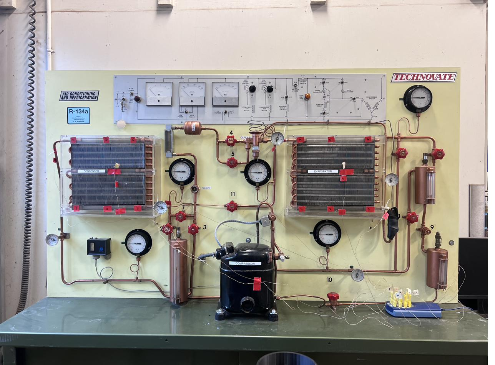
Scott Model 9086 — the R-134a vapor-compression rig used for all experiments.
Approach
Heat transfer rates were calculated using the airflow temperature-change method: measure the volumetric airflow rate through the heat exchanger, the temperature rise (or drop) across it, and apply q = ṁ · cp · ΔT. Getting there required a structured measurement procedure at both the condenser and evaporator.
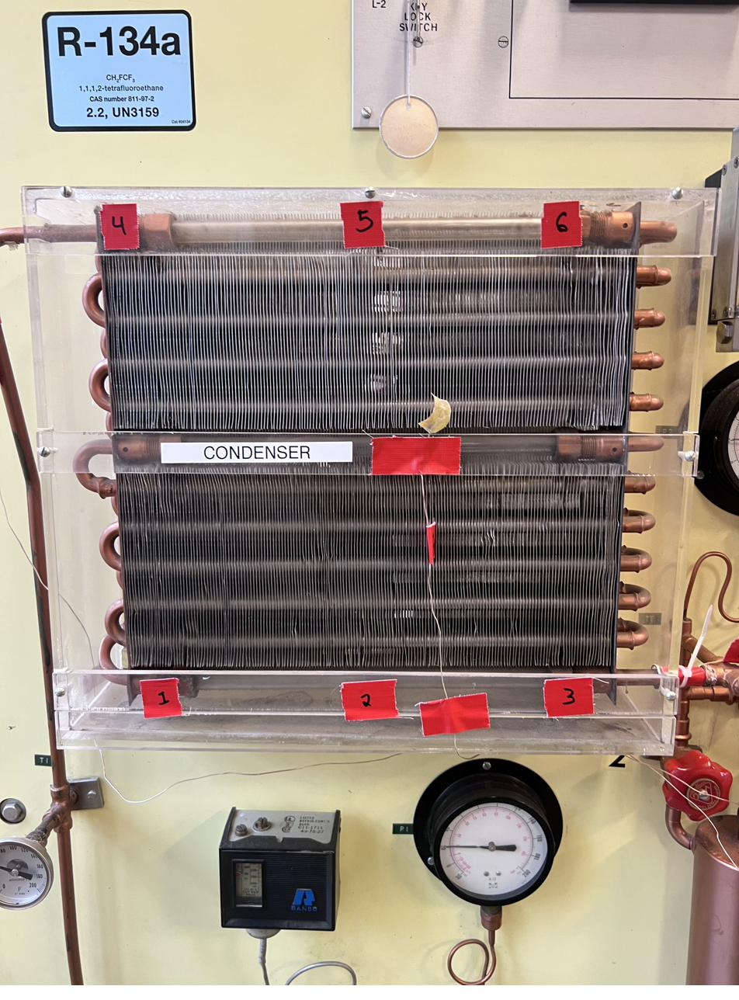
Condenser coil face — velocity measurement grid applied here for both inlet and exit.
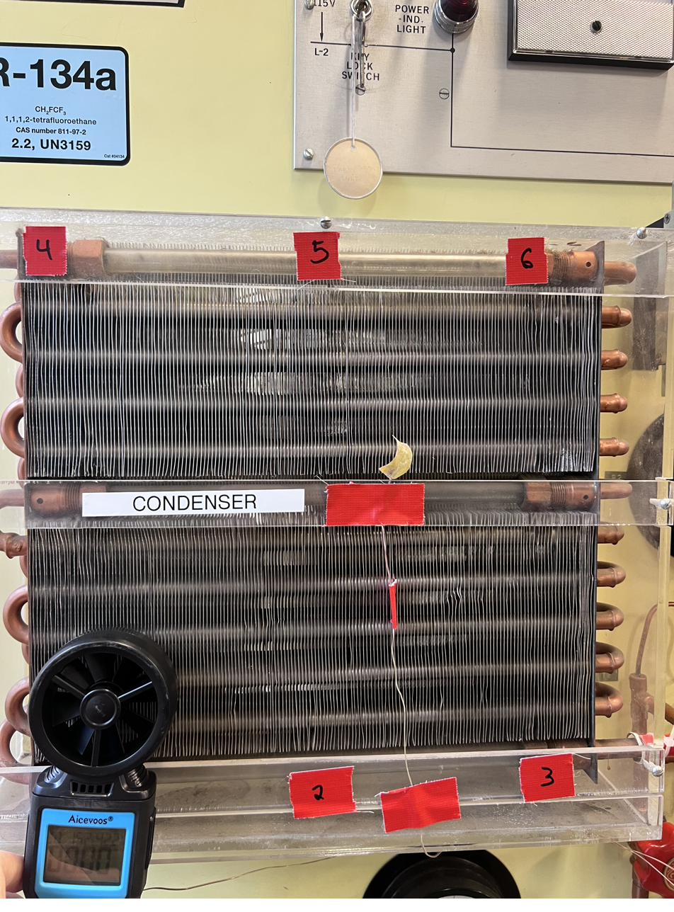
Anemometer at the condenser exit — one of 6 measurement points used to determine average exit velocity.
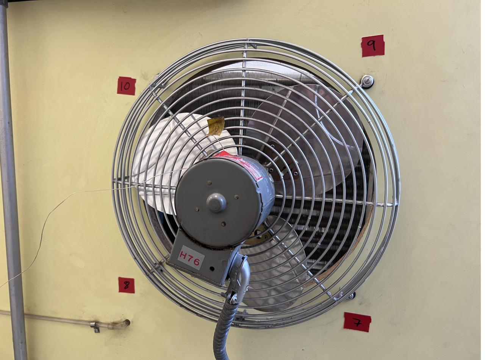
Thermocouples at the evaporator fan exit — measuring the temperature drop across the evaporator.
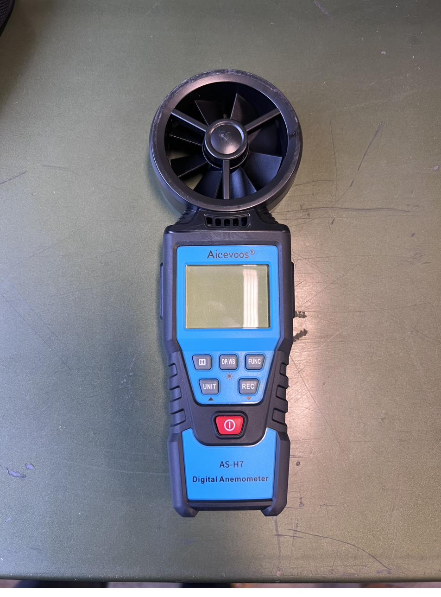
Digital anemometer — velocity resolution was one of the primary contributors to measurement uncertainty.
Results
The chart below shows the primary results: heat absorbed by the evaporator and heat rejected by the condenser, plotted side-by-side for each of the three fan speed experiments. The pattern shifts noticeably from low speed to high — and not in the direction classical thermodynamics alone would predict.
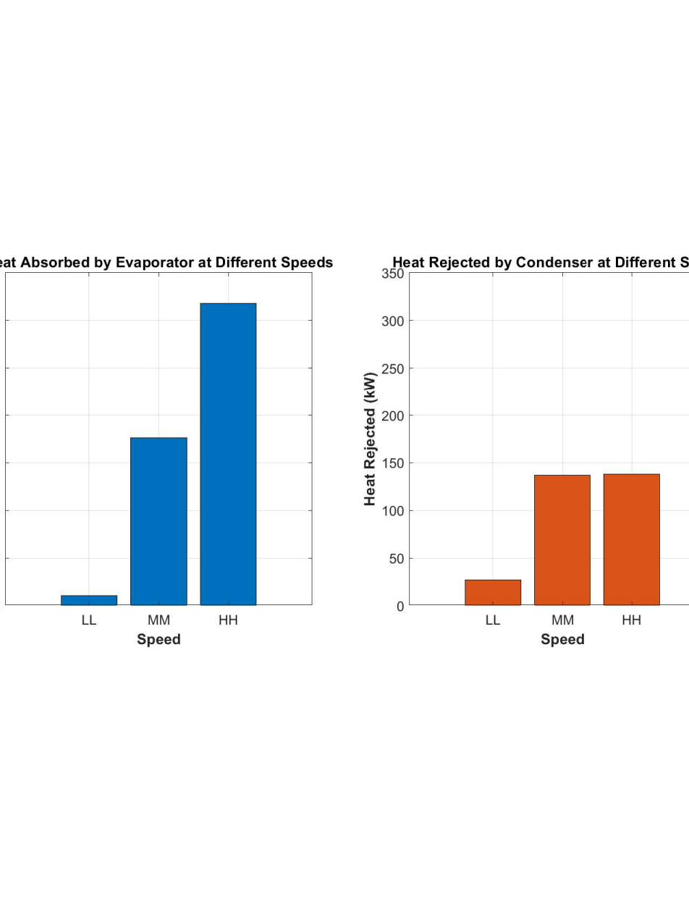
Fig. 1 — Heat absorbed (evaporator) vs. heat rejected (condenser) across all three fan speed settings. The reversal at higher speeds is the central finding.
At low fan speed (Experiment 3, LL), heat rejected by the condenser exceeded heat absorbed by the evaporator — consistent with the classical refrigeration energy balance, where the difference equals the compressor work input. At medium and high fan speeds, however, heat absorbed by the evaporator exceeded heat rejected by the condenser. The team attributed this reversal to heat loss from the uninsulated rig to the ambient lab environment: at higher fan speeds, greater airflow increases convective heat loss from the refrigerant lines and chassis surfaces, effectively shedding energy to the room before it reaches the condenser measurement point.
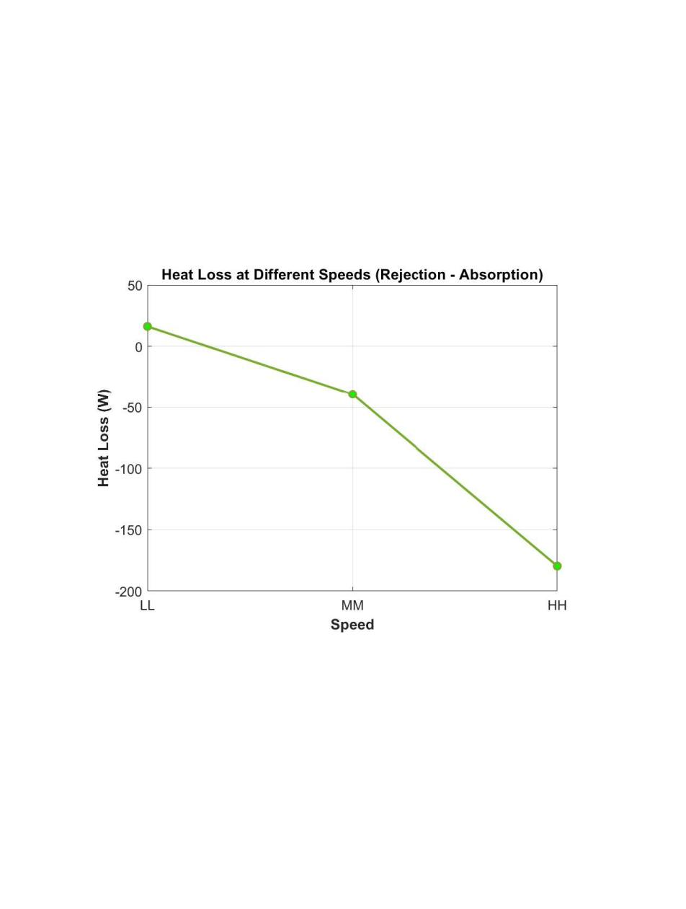
Fig. 2 — Heat loss trend: the gap between absorbed and rejected heat grows with fan speed, consistent with greater ambient losses at higher airflow.
The per-experiment breakdown charts below show evaporator and condenser heat rates individually, along with the implied compressor work estimates derived from the energy balance:
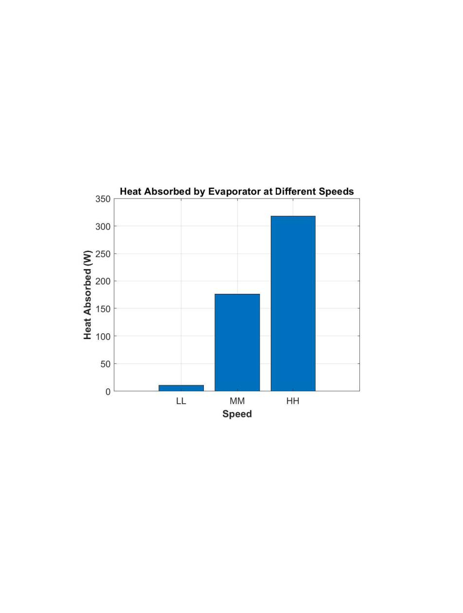
Heat absorbed at the evaporator by experiment — increases with fan speed.
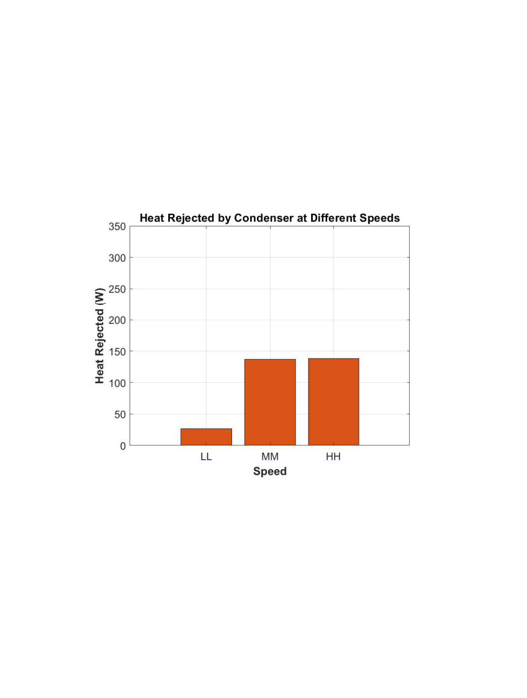
Heat rejected at the condenser by experiment — rises with fan speed, but below evaporator values at medium and high settings.
From the energy balance (Wcomp = Qrejected − Qabsorbed) at low fan speed, where rejected exceeded absorbed as expected: Experiment 3 (LL) ≈ 16.2 W. At medium speed the balance had flipped — ambient losses dominated — making a direct compressor work estimate less reliable, but the implied figure for Experiment 5_ss (MM) ≈ 50.4 W and for Experiment 2 (HH) ≈ 60.8 W. The trend toward higher apparent "compressor work" at higher fan speeds reflects the growing ambient heat loss term more than any true change in compressor output.
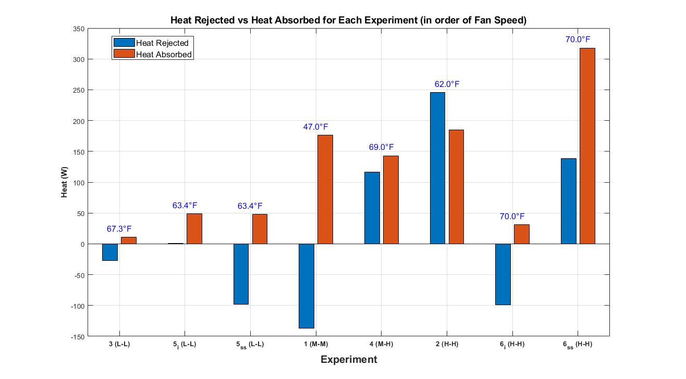
Fig. 3 — Heat transfer results by experiment number, showing evaporator and condenser heat rates across all runs.
Measurement Quality
Measurement uncertainties were propagated through the heat rate calculation using the root-sum-of-squares (RSS) method, combining the independent contributions from anemometer velocity resolution, thermocouple temperature precision, and the area measurement used to convert point velocities to volumetric flow. Overall uncertainty ranged from approximately 2–6% depending on the parameter and experiment, with anemometer velocity resolution and ΔT precision as the dominant drivers.
| Location | Fan Speed | Airflow (ft³/min) | Heat Rate (W) |
|---|---|---|---|
| Evaporator | Medium (MM) | 272.4 ± 7.2 | 175 ± 17.5 W |
| Condenser | Medium (MM) | 354.8 ± 9.1 | 137.2 ± 14 W |
Uncertainty at medium fan speed — representative of mid-range operating conditions. Full RSS uncertainty breakdown in the final report.
The anemometer's velocity resolution dominated the airflow uncertainty, and the thermocouple precision drove the ΔT term. Both propagate directly into the heat rate. At lower fan speeds — smaller ΔT and lower velocity — the relative uncertainty grew, making the low-speed results the least precise of the three settings.
Reflection
The experiment surfaced several real problems that reshaped the approach mid-project. The rig's built-in flow meter was unreliable — readings were inconsistent between runs and couldn't be independently verified. The team abandoned the latent-heat method that would have relied on those readings and switched entirely to the airflow temperature-change approach described above. That pivot worked, but it cost time and required re-deriving the measurement plan partway through.
Ambient temperature rise in the lab affected readings taken later in the session, after the rig had been running long enough to meaningfully warm the surrounding air. Because the method relies on a temperature difference between inlet and outlet air, any drift in the ambient baseline — which sets the inlet temperature — propagates directly into the calculated heat rate. Later experiments in a session may be slightly less accurate as a result.
Midway through the project, the evaporator fan failed — followed by an accidental short circuit during troubleshooting that took two lab sessions to resolve and set the schedule back significantly. It also meant the team had less time to gather steady-state data at all three fan speeds, which is reflected in the uneven experiment numbering in the results.
The system's gauges added another layer of uncertainty: they were originally calibrated for R-12 and R-22, not R-134a. Pressure readings required a conversion factor, introducing an additional source of systematic error that affected the EES state-point analysis more than the airflow-based heat rates.
The airflow method is a workable approach, but it's a relatively indirect and noisy way to measure heat transfer in a refrigeration cycle. The refrigerant itself carries more precise thermodynamic information: with accurate high-side and low-side temperatures and pressures, the EES state-point model can calculate condenser and evaporator heat duties directly from the refrigerant's own enthalpy change — no airflow measurement, no area estimation, no ambient drift.
In a re-run, the team would prioritize getting clean P-T data at steady state and feeding those into EES first — using the airflow method as a cross-check rather than the primary calculation. That would yield more defensible numbers and reduce the sensitivity to the lab's ambient conditions and the flowmeter's unreliability.
Behind the Project
A closer look at the rig, measurement setup, and data collected during the experiment.
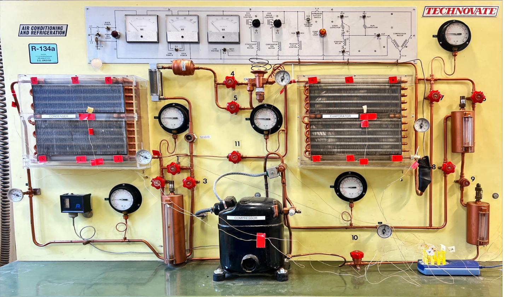
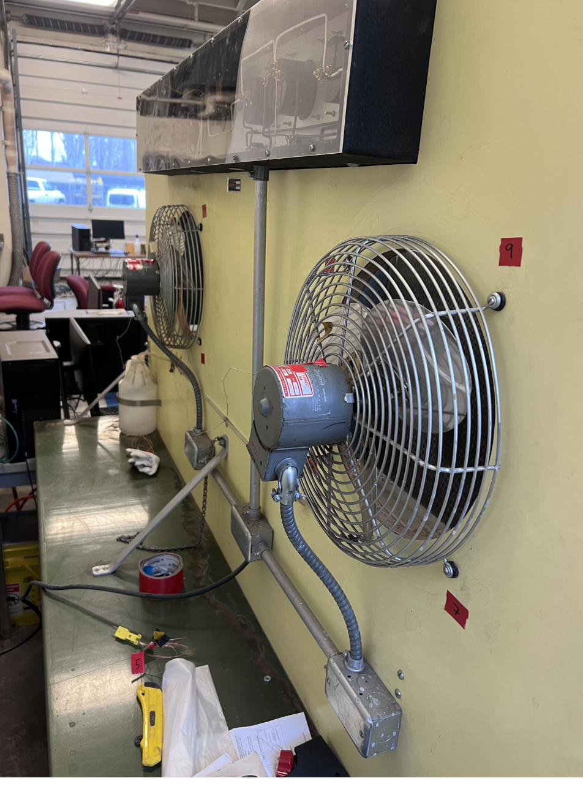